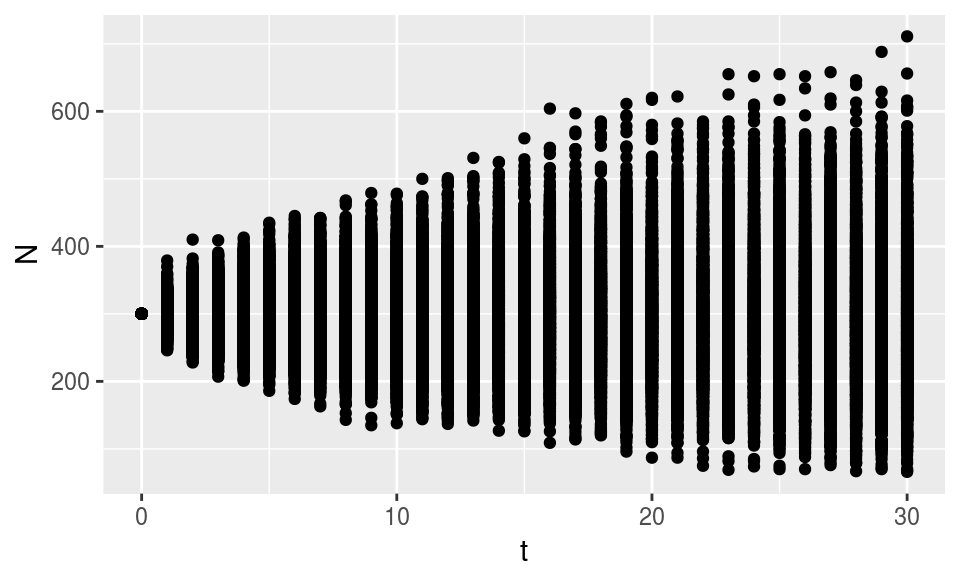
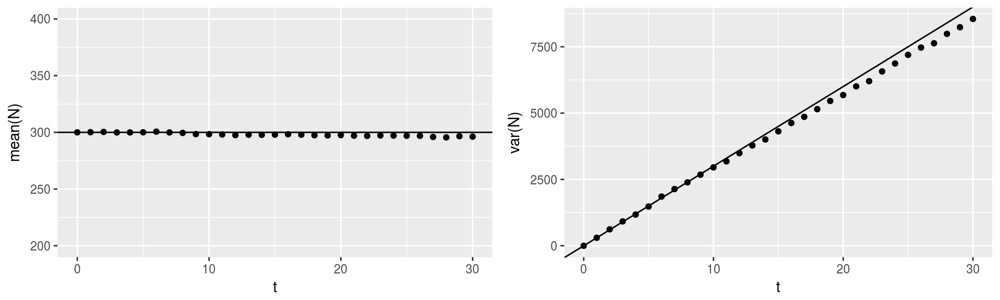

First Steps
These notes are the result of the interplay between my background in mathematics and my development as a theoretical biologist. I have placed them here primarily for my own reference. As I continue to learn and explore I will update these notes with my findings.
Fitness
I denote the fitness of an individual by \({\mathcal{W}}\), a Poisson distributed random variable. Why Poisson? Firstly, the fitness of an individual is the number of offspring it leaves, which is a non-negative integer. This coincides precisely with the support of the Poisson distribution. Secondly, the Poisson distribution has the property of maximizing entropy for all distributions that share its support under the constraint of having some specified mean. This is another of way stating that, aside from the first statistical moment, the Poisson distribution assumes the least information about the random variable it is modelling. If more information is known, a more precise distribution can be invoked. However, this would also make the resulting model less general.
We denote expectation by \(\mathbb{E}\) and \(W\equiv\mathbb{E}{\mathcal{W}}\) so that \(W\) represents the mean fitness of an individual (\(\equiv\) is used for definitions). This individual mean fitness may depend on its genotype (\(\gamma\)) or, more mechanistically, its phenotype (\(z\)). In general genotypes will be modelled as elements of some discrete space, usually finite, and phenotypes will usually be modelled as elements of the real line \(\mathbb{R}\), although at times we will restrict the range of phenotypes to be a countable or even finite subset of \(\mathbb{R}\). In the case of a random phenotype \(Z\) we write \(W(z)\equiv\mathbb{E}({\mathcal{W}}(Z)|Z=z)\), that is \(W(z)\) is a conditional mean, conditioned on the phenotype \(Z\) taking a particular value \(z\). In the case of a continuously distributed trait, we will use \(\phi(z)\) for the density function of the populations phenotypic distribution. Then the total expectation of fitness, or, population mean fitness is
\[\overline W={\mathbb{E}}{\mathcal{W}}(Z)=\int W(z)\phi(z)dz.\]
For discrete traits we write \(\phi(i)\) and \(W(i)\) for the frequency and mean fitness of trait \(i\) in the population. Population mean fitness is then calculated as \(\overline W=\sum_iW(i)\phi(i)\).
Population Dynamics
Let’s suppose there are \(N_t\) different individuals in the population at time \(t\), with each individual \(i\) having fitness \(\mathcal{W_{t+1}}(i)\). If we further suppose that generations are non-overlapping, then we obtain the population size in the next generation as \(N_{t+1}=\sum_{i=1}^{N_t}\mathcal{W_{t+1}}(i)\). If each \(\mathcal{W_{t+1}}(i)\) is a Poisson random variable with mean \(W_{t+1}(i)\) (in symbols \(\mathcal{W_{t+1}}(i)\sim\mathcal{P}(W_{t+1}(i))\)), then by the additive property of Poisson random variables we have \(N_{t+1}\sim\mathcal{P}\left(\sum_{i=1}^{N_t}W_{t+1}(i)\right)\). If selection is absent so that each \(\mathcal{W_{t+1}}(i)\) is identically distributed with mean \(W_{t+1}\), then \(N_{t+1}\sim\mathcal{P}(W_{t+1}N_t)\).
- Careful note: The random variable \(N_t\mathcal{W_{t+1}}(1)\) is not the same as \(\sum_{i=1}^{N_t}\mathcal{W_{t+1}}(i)\). Compute the variances for each case to see why.
Let’s now suppose we know the value of \(N_0\) exactly and that \(W_t=W\) for each \(t\). Then \(N_1\sim\mathcal{P}(WN_0)\) and \(N_2\sim\mathcal{P}(WN_1)=\mathcal{P}(W^2N_0)\), right? We need to be careful here as \(N_1\) is a random variable making \(N_2\) a random variable with a compound distribution, that is, a parameter controlling the distribution is itself a random variable. We can use the laws of total expectation and variance to find out if \(N_1\) is Poisson. If it is, then the expectation and variance will be equivalent. Otherwise it is not a Poisson random variable.
\[{\mathbb{E}}(N_2)={\mathbb{E}}({\mathcal{W}}){\mathbb{E}}(N_1)=W^2N_0\]
\[\mathrm{Var}(N_2)=(\mathrm{Var}({\mathcal{W}})+\mathbb{E}({\mathcal{W}})^2)\mathbb{E}(N_1)=(1+W)W^2N_0\neq\mathbb{E}(N_2)\]
For now, let’s settle for deterministic dynamics. We’ll return to the stochastics after we get a feel for the simplier situation.
Continuous Time
If we assume that selection is absent and mean fitness is constant with respect to time, we can derive continuous time mean dynamics of \(N_t\). To do so, suppose that for \(0<\delta<1\), \(\mathbb{E}N_{t+\delta}=W^\delta\mathbb{E} N_t\). Then \(\mathbb{E}N_{t+0}=\mathbb{E}N_t\) and \(\mathbb{E}N_{t+1}=W\mathbb{E}N_t\). Hence
\[\mathbb{E}\frac{dN_t}{dt}=\frac{d}{dt}\mathbb{E}N_t=\lim_{\delta\rightarrow0}\frac{\mathbb{E}N_{t+\delta}-\mathbb{E}N_t}{\delta}\]
\[=\lim_{\delta\rightarrow0}\frac{(W^\delta-1)}{\delta}\mathbb{E}N_t=\ln(W)\mathbb{E}N_t.\]
Note that switching the derivative and the expectation must be formally justified. In what follows, we won’t drag the annoying expectation symbol along with us. Instead we will adopt the convention that \(N_t\) is actually an expected value.
In typical notation one would write \(r\) in place of \(\ln(W)\). This exposes an interesting connection between two very distinct notions of fitness. The notion of fitness that I’ve been working with, \(W\), is called the Wrightian, or, multiplicative fitness. It is a non-negative number that corresponds to the expected number of offspring produced for some category. It’s been called multiplicative fitness because the multiplication of any two Wrightian fitnesses is yet another Wrightian fitness. The natural log of this value is known as the Malthusian, or, additive fitness. Its value can be positive or negative and corresponds to the expected per capita rate at which abundance fluctuates instantaneously. Note that the log of a product is the sum of the logs. It’s this basic log rule that provides the Malthusian fitness its additivity. The sum of any two Malthusian fitnesses is again a Malthusian fitness. Artem Kaznatcheev has a nice discussion of this topic here. To solidify the connection between these two notions of fitness, consider a population that maintains a constant size of 100 but becomes extinct at a single instant (as shown below). This corresponds to each individual at first having a fitness of 1 (remember we’re assuming fitness is constant throughout the population) making the Malthusian fitness of the population zero (hence, constant population size). Then when the population drops each individual must suddenly have a Wrightian fitness of zero. The Malthusian fitness of the population will then be \(\ln(0)\) which is \(-\infty\), corresponding to the discontinuous drop in the population size.

However, this result is a bit of an abuse of the above derivation as we had made the assumption that fitness is constant with respect to time. If we assume that \(\frac{dN_t}{dt}=\ln(W_t)N_t\), where now \(W_t\) is allowed to change with respect to time, then for consistency it would be good to reconcile this equation with the above assumption that \(N_{t+1}-N_t=(W_{t+1}-1)N_t\). Doing so restricts the nature of \(W_t\). Specifically,
\[1) \ \frac{d}{dt}(N_{t+1}-N_t)=\frac{d}{dt}(W_{t+1}-1)N_t=\frac{dW_{t+1}}{dt}N_t+(W_{t+1}-1)\frac{dN_t}{dt}\] \[={\left( \frac{dW_{t+1}}{dt}+(W_{t+1}-1)\ln W_t \right)}N_t\]
\[2) \ \frac{d}{dt}(N_{t+1}-N_t)=N_{t+1}\ln W_{t+1}-N_t\ln W_t=(W_{t+1}\ln W_{t+1}-\ln W_t)N_t.\]
Dividing eqns 1) and 2) by \(N_t\), then subtracting \(W_{t+1}\ln W_t-\ln W_t\) from both returns
\[\frac{dW_{t+1}}{dt}=W_{t+1}\ln W_{t+1}-\ln W_t-W_{t+1}\ln W_t+\ln W_t.\]
Shifting the time index and simplifying provides
\[\frac{d\ln W_t}{dt}=\ln W_t - \ln W_{t-1}.\]
This states that if \(W_t=0\) for some \(t\), then \(W_s=0\) for \(s>t\). That is to say, if the population goes extinct, it remains extinct. This makes perfect sense in the absence of immigration, but there’s another implication in this equation and to explore it I will assume that the general form of \(W_t\) is \(W_t=e^{r_t}\) for some function \(r_t\). Note that this implies \(\frac{dN_t}{dt}=r_tN_t\). Then the previously derived equation is equivalent to \(\frac{dr_t}{dt}=r_t-r_{t-1}\). In the case that \(r_t=k+r_{t-1}\) for some constant \(k\), we get \(r_t=kt+c\), making \(\frac{dN_t}{dt}=(kt+c)N_t\). But we can also make \(k_t\) a function \(t\). Here we get
\[\frac{dN_t}{dt}=\left(\int_0^tk_sds+c\right)N_t\]
This might be handy if, say, you wanted to incorporate the effects of population dynamics of another species that interacts with this one. In that case \(k_t\) would likely be a function of the other species’ population size at time \(t\). But there are other possibilities. For example, we can set \(r_t=k_tr_{t-1}\) to get
\[\frac{dN_t}{dt}=\left(e^{\int_0^tk_sds-t}+c\right)N_t.\]
Regardless of what is chosen for \(r_t\), this trick will be assured to work when \(r_t\) is a linear function of \(r_{t-1}\). That is, \(r_t=a_t+b_tr_{t-1}\). In this general case we get
\[\frac{dN_t}{dt}=\left(\int_0^ta_sds+e^{\int_0^tb_sds-t}+c\right)N_t.\]
We can then solve for the mean population size as a function of time to get
\[N_t=N_0e^{\int_0^tr(s)ds}.\]
Returning to Stochastics
Picking up where we left off, the variance has now been decoupled from the expectation forcing future generation population size distributions to be non-Poisson. This can be delt with if we choose the next best option\(\dots\) the negative binomial \(\mathrm{NB}(\nu,p)\). By setting \(\nu=WN_0\) and \(p=1-\frac{1}{1+W}\) this provides the expectation and variance derived above, but is \(\mathrm{NB}\) the actual distribution of \(N_2\)? Regardless, we can continue this program to derive the first two moments of future population sizes. Solutions for the expectation and variance of population sizes with fixed mean fitness are
\[{\mathbb{E}}(N_t)=W^tN_0 \text{ and } {\mathrm{Var}}(N_t)={\left( \sum_{i=0}^{t-1}W^i \right)}W^tN_0=\frac{1-W^t}{1-W}W^tN_0.\]
Our negative binomial for each time \(t\) can be accordingly parameterized by \(\nu_t=\frac{1-W}{W-W^t}W^tN_0\) and \(p_t=\frac{W-W^t}{1-W^t}\).
HYPOTHESIS: For \(W_t\neq W\), define \(W_0\equiv1\) and \(W_s=0\) for \(s<0\). Using the convention \(\prod_{i=1}^0W_i=1\) and \(\sum_{i=0}^{-1}W_i=0\), I think the following is true:
\[{\mathbb{E}}(N_t)={\left( \prod_{i=1}^tW_i \right)}N_0 \text{ and } {\mathrm{Var}}(N_t)={\left( \sum_{i=0}^{t-1}\prod_{j=1}^iW_j \right)}{\left( \prod_{i=1}^tW_i \right)}N_0\]
and
\[{\mathbb{E}}(N_t)={\left( \bigwedge_0^tW_s^{ds} \right)}N_0 \text{ and }{\mathrm{Var}}(N_t)={\left( \int_0^t\bigwedge_0^sW_u^{du}ds \right)}{\mathbb{E}}(N_t)\]
where \(\bigwedge\) represents type-1 product integration and is defined by
\[\bigwedge_0^tW_s^{ds}\equiv e^{\int_0^t\ln W_sds}.\]
Hence, this returns the same expected dynamics as above when \(\ln W_t=r_t\). If \(W_t=W\) is constant across time we have
\[\bigwedge_0^tW_s^{ds}=e^{t\ln W}\]
and
\[\int_0^t\bigwedge_0^s W_u^{du}ds=\frac{1}{\ln W}{\left( e^{t\ln W}-1 \right)}.\]
In the case where \(W=1\) we have a problem. We can solve it with l’Hôpital’s rule.
\[\lim_{x\rightarrow0}\frac{e^{tx}-1}{x}=\lim_{x\rightarrow0}te^{tx}=t.\]
Note that when \(W=1\) there is no bias for the population to grow or shrink, sort of like a symmetric random walk. We also see that \({\mathbb{E}}(N_t)=N_0\) for all \(t\), implying that the process \(N_t\) is a martingale when \(W=1\).
Let’s now find the dynamics of the variance of population size across time using the same approach that we took to obtain the dynamics of the mean. Using our solution for constant fitness across time, we can obtain a derivative by making the following additional assumption
\[{\mathrm{Var}}(N_{t+\delta})={\left( \delta W^t+\sum_{i=0}^{t-1}W^i \right)}{\mathbb{E}}(N_{t+\delta}).\]
Hence
\[\frac{d}{dt}{\mathrm{Var}}(N_t)=\lim_{\delta\rightarrow0}\frac{{\mathrm{Var}}(N_{t+\delta})-{\mathrm{Var}}(N_t)}{\delta}\]
\[=\lim_{\delta\rightarrow0}\frac{{\left( \delta W^t+\sum_{i=0}^{t-1}W^i \right)}{\mathbb{E}}(N_{t+\delta})-{\left( \sum_{i=0}^{t-1}W^i \right)}{\mathbb{E}}(N_t)}{\delta}\]
\[=\lim_{\delta\rightarrow0}\frac{{\left( W^\delta{\left( \delta W^t+\sum W^i \right)}-\sum W^i \right)}{\mathbb{E}}(N_t)}{\delta}\]
\[=\lim_{\delta\rightarrow0}{\left( W^{t+\delta}+\frac{(W^\delta-1)}{\delta}\sum_i W^i \right)}{\mathbb{E}}(N_t)\]
\[={\left( W^t+\ln(W)\sum_i W^i \right)}{\mathbb{E}}(N_t)\]
For fitness that varies across time I hypothesize the following:
\[D_t{\mathrm{Var}}(N_t)={\left( \bigwedge_0^t W_s^{ds}+ \ln(W_t)\int_0^t\bigwedge_0^s W_u^{du}ds \right)}{\mathbb{E}}(N_t).\]
Differentiating the above hypothesized solution for \({\mathrm{Var}}(N_t)\) shows that these results are copacetic.
Also note this implies that at \(t=0\) the rate of increase in the variance is equal to the number of initial individuals. For instance, if there’s no individuals, the variance will be zero because we are certain there will be no offspring. Since each individual contributes uncertainty to the number of offspring the variance should increase faster with larger initial populations. However, if the fitness is less than one, the log will act to reduce the variance, most likely because extinction would happen quickly if the fitness is less than one long enough.
Testing the results
Let’s start off simple and assume \(W_t=W=1\) for all \(t\). Then we expect \({\mathbb{E}}(N_t)=N_0\) and \({\mathrm{Var}}(N_t)=tN_0\). I’ll set \(N_0=300\) and run 2000 replicates. Overlaying the trajectories for these replicates on the same scatter plot results in:
N <- NULL
N2 <- NULL
W <- 1
t <- 1:30
for(j in 1:2000){
NN <- 300
for(i in t){
Np <- rpois(1,NN[i]*W)
NN <- c(NN,Np)
}
N <- rbind(N,NN)
N2 <- c(N2,NN)
}
t <- 0:30
data <- data.frame(rep(t,2000),N2)
colnames(data) <- c("t","N")
require(ggplot2)## Loading required package: ggplot2ggplot(data,aes(x=t,y=N))+geom_point()
Taking the means and variances of these replicates at each time step, we can compare the resulting trajectories of simulated population dynamics (represented by the dots) to the analytical results (represented by the solid lines).
mN <- NULL
for(i in (t+1)){
mN <- c(mN,mean(N[,i]))
}
vN <- NULL
for(i in (t+1)){
vN <- c(vN,var(N[,i]))
}
dm <- data.frame(t,mN)
dv <- data.frame(t,vN)
plm <- ggplot(dm,aes(x=t,y=mN))+geom_point()+ylim(200,400)+ylab("mean(N)")+geom_abline(slope=0,intercept=300)
plv <- ggplot(dv,aes(x=t,y=vN))+geom_point()+ylab("var(N)")+geom_abline(slope=300,intercept=0)
require(gridExtra)## Loading required package: gridExtragrid.arrange(plm,plv,ncol=2)